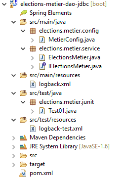
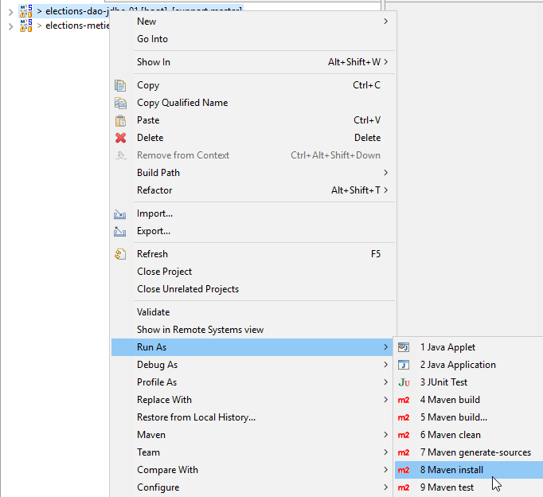

8. [TD] : La couche [metier]
Mots clés : architecture multicouche, Spring, injection de dépendances.
 |
8.1. Support
 |  |
Le dossier [support / chap-08] contient le projet Eclipse de ce chapitre.
8.2. Configuration Maven
 |
Le projet [elections-metier-dao-jdbc] va s'appuyer sur le projet [elections-dao-jdbc-01]. Nous allons installer le jar de ce dernier projet dans le dépôt Maven local :
 |
Ceci fait, la configuration Maven du projet Eclipse [elections-metier-dao-jdbc] est la suivante :
 |
<project xmlns="http://maven.apache.org/POM/4.0.0" xmlns:xsi="http://www.w3.org/2001/XMLSchema-instance"
xsi:schemaLocation="http://maven.apache.org/POM/4.0.0 http://maven.apache.org/xsd/maven-4.0.0.xsd">
<modelVersion>4.0.0</modelVersion>
<groupId>istia.st.elections</groupId>
<artifactId>elections-metier-dao-jdbc</artifactId>
<version>0.0.1-SNAPSHOT</version>
<parent>
<groupId>org.springframework.boot</groupId>
<artifactId>spring-boot-starter-parent</artifactId>
<version>1.2.7.RELEASE</version>
</parent>
<properties>
<project.build.sourceEncoding>UTF-8</project.build.sourceEncoding>
<java.version>1.8</java.version>
</properties>
<dependencies>
<!-- DAO -->
<dependency>
<groupId>istia.st.elections</groupId>
<artifactId>elections-dao-jdbc-01</artifactId>
<version>0.0.1-SNAPSHOT</version>
</dependency>
<!-- Spring Boot -->
<dependency>
<groupId>org.springframework.boot</groupId>
<artifactId>spring-boot</artifactId>
<scope>test</scope>
</dependency>
<!-- Spring Boot Test -->
<dependency>
<groupId>org.springframework.boot</groupId>
<artifactId>spring-boot-starter-test</artifactId>
<scope>test</scope>
</dependency>
</dependencies>
<!-- plugins -->
<build>
<plugins>
<plugin>
<artifactId>maven-assembly-plugin</artifactId>
<configuration>
<archive>
<manifest>
<mainClass>config.AppConfig</mainClass>
</manifest>
</archive>
<descriptorRefs>
<descriptorRef>jar-with-dependencies</descriptorRef>
</descriptorRefs>
</configuration>
</plugin>
<!-- pour l'installation de l'artifact du projet dans le dépôt local Maven -->
<plugin>
<groupId>org.apache.maven.plugins</groupId>
<artifactId>maven-surefire-plugin</artifactId>
<version>2.18.1</version>
</plugin>
</plugins>
</build>
</project>
- lignes 21-25 : la dépendance sur le jar du projet [elections-jdbc-01]. On prend ces lignes directement dans le fichier [pom.xml] du projet que l'on veut importer :
<project xmlns="http://maven.apache.org/POM/4.0.0" xmlns:xsi="http://www.w3.org/2001/XMLSchema-instance" xsi:schemaLocation="http://maven.apache.org/POM/4.0.0 http://maven.apache.org/xsd/maven-4.0.0.xsd">
<modelVersion>4.0.0</modelVersion>
<groupId>istia.st.elections</groupId>
<artifactId>elections-dao-jdbc-01</artifactId>
<version>0.0.1-SNAPSHOT</version>
...
- lignes 26-37 : les dépendances nécessaires aux tests. Bien qu'elles soient présentes dans le fichier [pom.xml] du projet [elections-jdbc-01], nous sommes obligés de les remettre car leur attribut [<scope>test</scope>] fait qu'elles n'ont pas été incluses dans le jar mis dans le dépôt Maven local ;
8.3. Configuration Spring
 |
package elections.metier.config;
import org.springframework.cache.annotation.EnableCaching;
import org.springframework.context.annotation.ComponentScan;
import org.springframework.context.annotation.Import;
@Import({ elections.dao.config.AppConfig.class })
@EnableCaching
@ComponentScan(basePackages = { "elections.metier.service" })
public class MetierConfig {
}
- ligne 7 : on importe tous les beans définis dans la couche [DAO] ;
- ligne 8 : on active le cache. On ne redéfinit pas le bean [CacheManager], car il est déjà défini dans la couche [DAO] ;
- ligne 9 : la couche [métier] définit de nouveaux beans dans le package [elections.metier.service] ;
8.4. L'interface [IElectionsMetier]
 |
La couche [metier] aura l'interface présentée paragraphe 4.2. Nous la rappelons :
public interface IElectionsMetier {
public ListeElectorale[] getListesElectorales();
public int getNbSiegesAPourvoir();
public double getSeuilElectoral();
public void recordResultats(ListeElectorale[] listesElectorales);
public ListeElectorale[] calculerSieges(ListeElectorale[] listesElectorales);
}
8.5. La classe d'implémentation [ElectionsMetier]
 |
Cette classe implémente l'interface [IElectionsMetier]. L'implémentation proposée aura la structure suivante :
package elections.metier.service;
import org.springframework.beans.factory.annotation.Autowired;
import org.springframework.cache.annotation.Cacheable;
import org.springframework.stereotype.Component;
import elections.dao.entities.ListeElectorale;
import elections.dao.service.IElectionsDao;
@Component
public class ElectionsMetier implements IElectionsMetier {
// le point d'accès à la couche [dao] instanciée par [Spring]
@SuppressWarnings("unused")
@Autowired
private IElectionsDao electionsDao;
// calcul des sièges obtenus
@Override
public ListeElectorale[] calculerSieges(ListeElectorale[] listesElectorales) {
throw new RuntimeException("[calculerSieges] not yet implemented");
}
// listes en compétition
@Override
public ListeElectorale[] getListesElectorales() {
throw new RuntimeException("[getListesElectorales] not yet implemented");
}
// sauvegarde des résultats
@Override
public void recordResultats(ListeElectorale[] listesElectorales) {
throw new RuntimeException("[recordResultats] not yet implemented");
}
// nombre de sièges à pourvoir
@Override
public int getNbSiegesAPourvoir() {
throw new RuntimeException("[getNbSiegesAPourvoir] not yet implemented");
}
// seuil électoral
@Override
public double getSeuilElectoral() {
throw new RuntimeException("[getSeuilElectoral] not yet implemented");
}
}
- ligne 10 : la classe [ElectionsMetier] est un composant Spring ;
- ligne 11 : la classe [ElectionsMetier] implémente l'interface [IElectionsMetier] ;
- lignes 15-16 : injection Spring d'une référence sur la couche [DAO] ;
- lignes 37 et 44 : le nombre de sièges à pourvoir et le seuil électoral sont mis en cache ;
Travail à faire : écrivez la classe [ElectionsMetier]. On s'aidera des commentaires lorsqu'il y en a. On n'essaiera pas d'arrêter (try / catch) les exceptions de type [ElectionsException] qui remontent de la couche [DAO]. On les laissera remonter à la couche [UI]. Parce que la classe [ElectionsException] est un type d'exception non contrôlée, il n'y a pas obligation à la gérer par un (try / catch).
8.6. La classe de test
 |
La classe de test JUnit aura la forme suivante :
package tests;
import org.junit.Test;
import org.junit.runner.RunWith;
import org.springframework.beans.factory.annotation.Autowired;
import org.springframework.boot.test.SpringApplicationConfiguration;
import org.springframework.test.context.junit4.SpringJUnit4ClassRunner;
import dao.config.AppConfig;
import dao.entities.ElectionsException;
import metier.service.IElectionsMetier;
@SpringApplicationConfiguration(classes = MetierConfig.class)
@RunWith(SpringJUnit4ClassRunner.class)
public class Test01 {
// couche [métier]
@Autowired
static private IElectionsMetier electionsMetier;
/**
* vérification 1 : méthode de calcul des sièges on fixe en dur les listes
*/
@Test
public void calculSieges1() {
// on crée le tableau des 7 listes candidates (nom, voix)
// on calcule les sièges de chacune des listes
// on vérifie les résultats (sièges, voix, elimine)
// temporaire
throw new RuntimeException("[calculSieges1] not yet implemented");
}
/**
* vérification 2 : méthode de calcul des sièges on demande les listes à la
* couche [metier] puis on fixe en dur les voix
*/
@Test
public void calculSieges2() {
// on récupère en base le tableau des 7 listes candidates
// on fixe en dur les voix
// on calcule les sièges obtenus par chacune des listes
// on vérifie les résultats (sièges, voix, elimine)
// temporaire
throw new RuntimeException("[calculSieges2] not yet implemented");
}
/**
* vérification 3 méthode de calcul des sièges on provoque une exception
*/
@Test(expected = ElectionsException.class)
// écrire un test qui provoque une exception de type [ElectionsException]
public void calculSieges3() {
// on crée un tableau de 25 listes candidates avec chacune 1 voix
// les 25 listes auront le même nombre de voix (4%)
// calcul des sièges - normalement on doit avoir une ElectionsException
// avec un seuil électoral de 5%
// temporaire
throw new RuntimeException("[calculSieges3] not yet implemented");
}
/**
* enregistrement des résultats de l'élection
*/
@Test
public void ecritureResultatsElections() {
// on crée le tableau des 7 listes candidates
// on fixe en dur les voix
// on calcule les sièges obtenus par chacune des listes
// on enregistre les résultats dans la base de données
// on relit les listes en base
// on vérifie les résultats (sièges, voix, elimine)
// temporaire
throw new RuntimeException("[ecritureResultatsElections] not yet implemented");
}
}
Travail à faire : écrivez les quatre méthodes de tests en vous aidant des commentaires. On se rappellera que lorsque ces méthodes s'exécutent, le champ [electionsMetier] de la ligne 19 a déjà été initialisé. Vérifiez que le test JUnit passe.
8.7. Création de l'archive de la couche [metier]
Comme il a été fait pour la couche [DAO], nous mettons l'archive du projet [elections-metier-dao-jdbc] dans le dépôt Maven local :
 |
Note : cette opération peut échouer si votre projet Eclipse est associé à un JRE (Java Runtime Environment) au lieu d'un JDK (Java Development Kit). Pour le savoir, procédez comme indiqué au paragraphe 3.1. Si vous découvrez que vous avez un JRE et non un JDK, associez votre projet à un JDK comme indiqué dans ce paragraphe.
8.8. Conclusion
Rappelons l'architecture générale de l'application [Elections] que nous sommes en train de construire :
 |
Nous avons construit les couches [metier] et [dao]. Nous allons maintenant construire la couche [ui]. Nous proposerons deux implémentations pour cette couche :
- une implémentation " console "
- une implémentation avec interface graphique